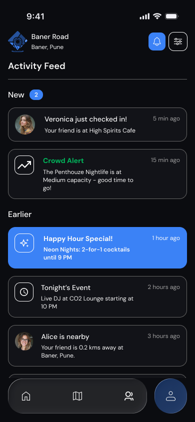
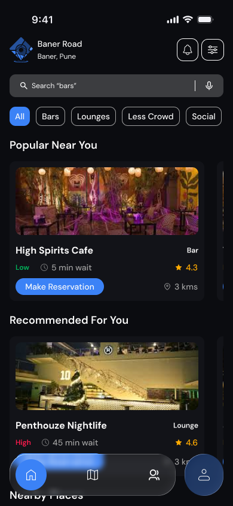
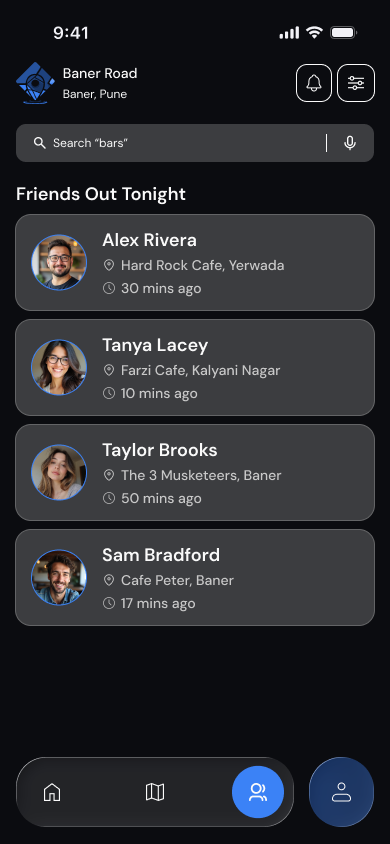
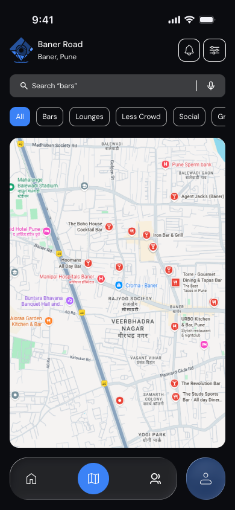

HotSpot Mobile
HotSpot is a mobile application designed to help users discover the most popular nightlife venues in real time. Planning a night out often involves uncertainty about which venues are busy, how long the wait times are and what promotions or events are happening. This project explores the UX design of a location-based nightlife discovery platform that helps users quickly find the best venues nearby.
Problem Statement
People often struggle to decide where to go when planning a night out, especially in cities with many nightlife options. Without real-time information about venues, users may end up visiting overcrowded locations or missing out on better options nearby.
Key Issues Identified
- Lack of real-time data about venue crowd levels
- Unclear wait times at popular locations
- Limited visibility into promotions and events
- Difficulty discovering new venues
Design Goals
The design focused on creating a platform that simplifies nightlife discovery through real-time insights.
- Provide real-time information about venue popularity
- Simplify the process of discovering nearby venues
- Improve access to promotions and event details
- Enable social features that enhance nightlife experiences
UX Audit of the Existing System
To understand the challenges of nightlife discovery, I analyzed how users typically find venues and plan social outings. The analysis revealed that most people rely on social media, search engines or word-of-mouth recommendations.
- Venue information is scattered across different platforms
- Crowd levels are difficult to estimate before visiting
- Event and promotion information is often incomplete
- Social coordination between friends is limited
Ideation & Exploration
During ideation, the focus was on designing a platform that combines location-based discovery with real-time venue insights.
- Interactive maps showing nearby venues
- Real-time crowd level indicators
- Filters for discovering bars and clubs
- Social features for tracking friends' locations
Final Design
The final design focuses on creating a streamlined event management experience.
- Provides real-time venue popularity indicators
- Interactive map-based discovery
- Clear event details





Expected Impact
The platform could potentially lead to:
- Faster discovery of nightlife venues
- Improved planning for social outings
- Increased engagement with local venues
Reflections & Learnings
This project helped me explore how digital tools can simplify event planning workflows and improve coordination between participants.